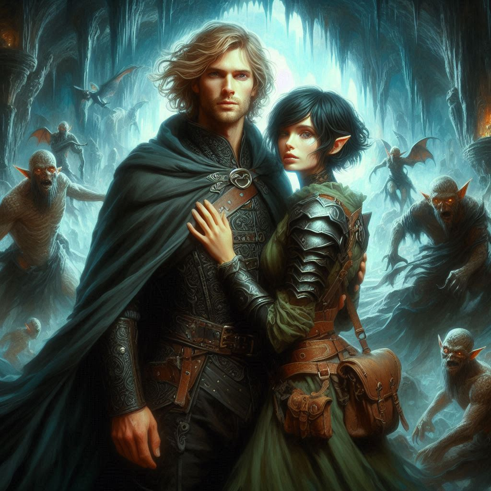
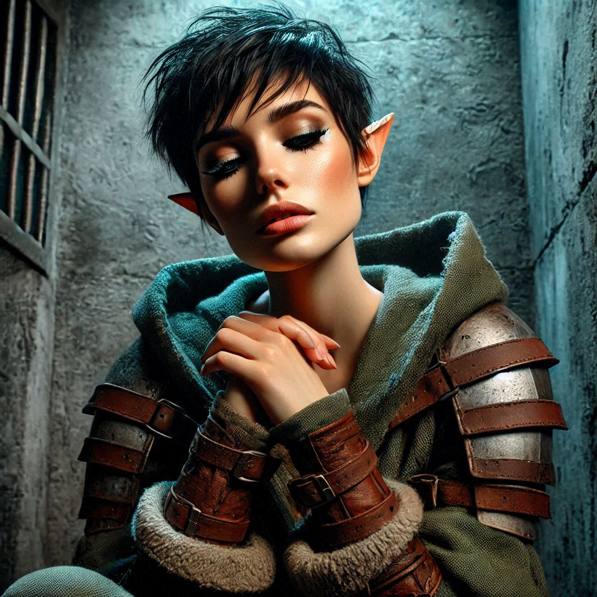

The Shadow’s Embrace
The cavern air is thick with tension as you stand in the dim light, facing Jorsh. His voice, low and desperate, reverberates through the ancient stone walls. You feel the coldness of his magic wrapped around Princess Hawthorn, her form frozen, bound by spells you barely understand. Liora lies still, her breath shallow, while you’re caught between duty and desire.
Jorsh’s eyes search yours, pleading and fierce. His words hang between you: “The royal family betrayed Yew. Varis is their puppet. I have to stop him, Kira. I need you. Together, we can defeat him, stop this madness before it consumes us all. Help me save our people. Help me save you.”
A spark flickers deep within you. The feelings you buried long ago—your connection to Jorsh, the boy who left you—begin to surface. The past seems distant yet alive, whispering promises of a future where you stand side by side against a common enemy. Maybe, just maybe, you can rewrite your story, one where you and Jorsh aren’t torn apart by betrayal and darkness.
“Join me,” he whispers, stepping closer, his hand outstretched.
You hesitate, torn between your loyalty to the Kingdom and the undeniable pull toward him. The weight of the princess’s life, Liora’s fate, and the threat of Varis all press in on you, suffocating.
But the thought of Jorsh—of you and Jorsh—is overwhelming. A single choice stretches before you. One you’ve avoided for too long.
Slowly, you reach out and clasp his hand.
“I’ll help you,” you say, your voice steady, even though your heart pounds in your chest. “But only if we stop Varis together.”
A smile flickers across Jorsh’s face, the coldness of his magic easing slightly as he releases Princess Hawthorn, leaving her suspended but alive. Her body floats in the air, suspended in an unnatural sleep state. Liora is unconscious beside her.
“I knew you would, Kira. I knew we were still connected.”
“What do we do with these two?” You motion toward Hawthorn and her mage. “We’ve committed treason. Do we leave them for dead or arrest them?”
“We can arrest them after we stop Varis,” Jorsh says smugly. “Once we have stopped the evil forces of the Shadow Realm, we will have enough power to bring the corruption of the Hawthorn reign to justice once and for all.”
“You seem very sure of yourself,” you say, feeling a mixture of admiration and fear.
The two of you waste no time. With his magic guiding the way, you delve deeper into the caverns, away from the princess and Liora, further into the shadowy depths where Varis’s presence grows stronger. The ancient stones hum with an unseen power, and Jorsh explains as you go.
“The royal family has long been complicit in Varis’s schemes,” Jorsh says. “They allowed him to rise through the ranks, blind to his true identity. And now, Yew is in peril because of their ignorance. Varis plans to open the portal to the Realm of Shadows and bring forth an army of dark elves. He’s using Yaldaboath’s magic, the demon lord who nearly consumed us once before.”
Your blood runs cold. You’ve heard whispers of Yaldaboath—rumors, legends—but to know that Varis is wielding such dark power chills you to your core.
“But why turn to dark magic yourself?” you ask, voice laced with a tension you can’t hide. “Why become the very thing you were fighting?”
Jorsh’s eyes darken, shadows flickering in their depths. “I had no choice. Varis’s power is ancient, tied to the darkest corners of this world. I had to fight him on his level. But with you by my side, I won’t have to do it alone anymore.”
Before you can respond, a distant rumble shakes the ground beneath your feet. The shadows around you twist and shift as though alive, and you can feel a pulse of power in the air. Varis is near.
You grip your bow tighter, your heart racing. You’ve made your choice, but every step forward feels heavier, like you’re walking toward an inevitable fate.
Suddenly, a flash of movement ahead catches your eye. Varis’s minions—twisted creatures of the Shadow Realm—emerge from the darkness, their eyes glowing with malevolent light. Jorsh’s magic flares as he raises his hands, unleashing a torrent of energy that cuts through the shadows like a blade.
“Stay close,” he calls to you, his voice barely audible over the hissing of ancient magic and the guttural roars of the shadow creatures.
You leap into action, your arrows flying true, taking down creature after creature. Your senses heighten in the chaos, and for a brief moment, it’s just you and Jorsh, working in perfect sync. The shadows retreat, and silence falls once more.
“We’re close,” Jorsh says, breathless.
But before you can take another step, a surge of electricity fills the air, and the world spins. A crackling force strikes both of you, sending you tumbling to the ground. Pain shoots through you, your body immobilized. You can barely move, barely breathe.
A shadow looms above you. It’s Liora.
She stands tall, magic swirling around her fingertips, her expression fierce. “You fools,” she hisses. “You’ve doomed us all. You’ve fallen right into Varis’s trap.”
With another crackle of magic, darkness overtakes you.

When you awaken, cold stone presses against your skin. Chains bind your wrists and ankles, and the air is thick with the scent of damp stone and mildew. You’re in a dungeon, deep within the Kingdom of Yew. A torch flickers dimly in the corner, casting eerie shadows on the walls.
Liora stands at the cell door, her eyes filled with contempt. “You betrayed us, Kira,” she says, her voice sharp. “Because of you, the princess is dead. Varis will soon open the portal, and all of Yew will fall.”
Your heart sinks, and a sickening dread washes over you. You underestimated Hawthorn’s mage.
“I... I didn’t know,” you whisper, your voice cracking. “I thought...”
“You thought wrong,” Liora snaps. “Now, we are at war. And it’s your fault.”
Her words cut deep, but they’re nothing compared to the weight of what you’ve done. The Kingdom of Yew is on the brink of destruction, and you, chained and powerless, can only watch as the darkness looms ever closer.